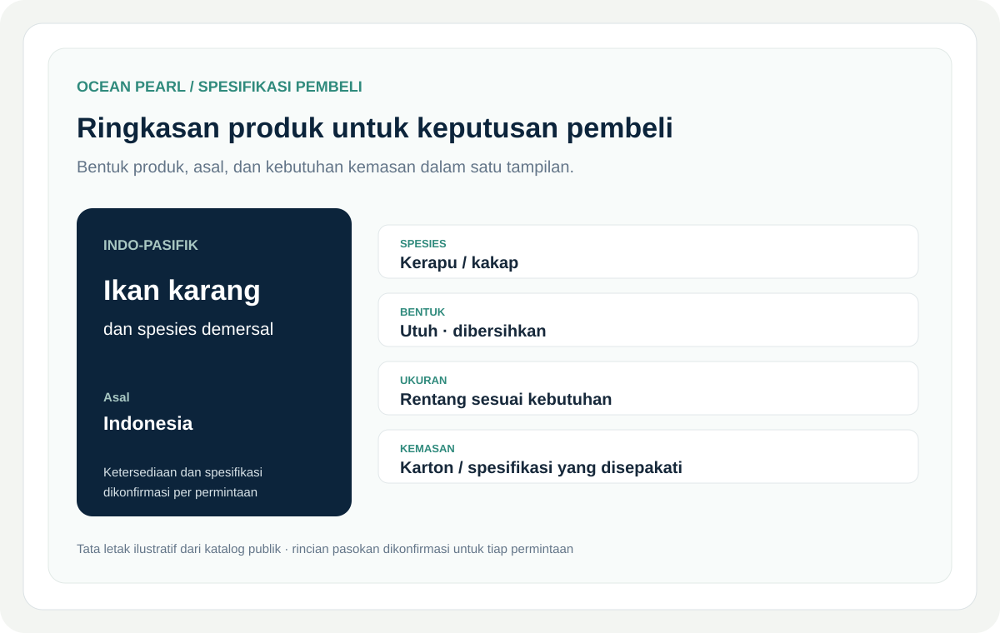

Tantangan
Bisnis ini mencakup beragam produk, asal, bentuk, persyaratan kemasan, dan rincian permintaan. Pembeli membutuhkan informasi yang tepat dalam format yang cepat mereka nilai.
Informasi produk yang jelas dan alur kerja siap pembeli untuk pengadaan serta koordinasi ekspor hasil laut.

Bisnis ini mencakup beragam produk, asal, bentuk, persyaratan kemasan, dan rincian permintaan. Pembeli membutuhkan informasi yang tepat dalam format yang cepat mereka nilai.
Penyusunan informasi untuk pembeli, presentasi produk dan spesifikasi, serta alur pertanyaan komersial untuk bisnis hasil laut nyata.
Saya mulai dari pertanyaan pembeli: spesies, ukuran, bentuk produk, kemasan, tujuan, dan dokumen yang dibutuhkan. Informasi publik disusun untuk membantu keputusan tersebut; ketersediaan dan spesifikasi pasti dikonfirmasi untuk setiap permintaan.
Disusun berdasarkan halaman produk dan pengadaan publik Ocean Pearl. Produk, asal, musim, legalitas, dan rute dikonfirmasi untuk setiap kasus.
Membantu menjelaskan penawaran komersial yang kompleks dan memberi pembeli titik awal yang lebih jelas untuk mengajukan permintaan serius.